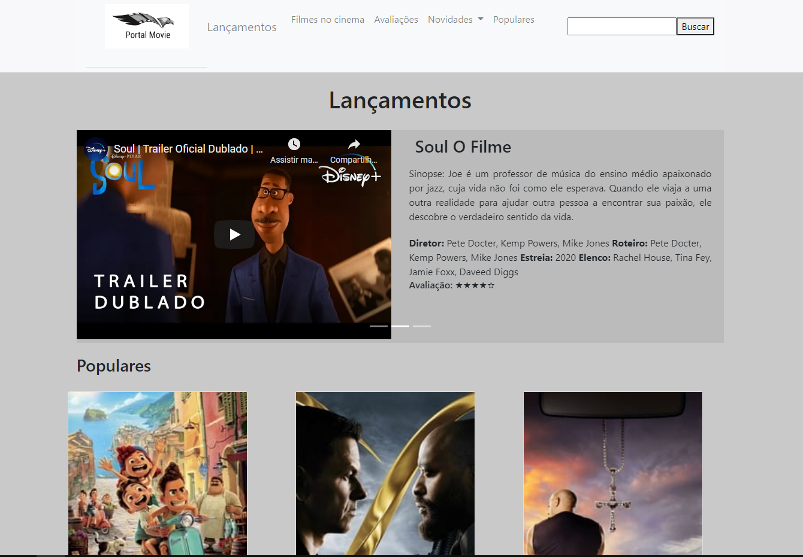

Antes da faculdade
Antes da faculdade eu tinha uma vida de intenso estudo na escola mas nunca tive algum curso técnico ou algo parecido com a computação, portanto tudo que aprendi do início ao fim do primeiro período na faculdade foi novo.
Blog dedicado para curso Laboratório de Introdução a Programação
Antes da faculdade eu tinha uma vida de intenso estudo na escola mas nunca tive algum curso técnico ou algo parecido com a computação, portanto tudo que aprendi do início ao fim do primeiro período na faculdade foi novo.
Ao longo do semestre, acabei criando dois jogos na plataforma Scratch, um sozinho (no caso, o "flappy fish") e outro com meu grupo, formado por Arthur Dias e Pedro Melo ("Stars Nobel's"). O segundo, em especial, é mais elaborado, e possui um site próprio. Sendo assim, segue abaixo o jogo "Flappy Fish" e o site do jogo "Stars Nobel's".
Este foi meu primeiro projeto envolvendo o Arduíno Tinkercad. Nele, eu montei quatro arduínos.Além disso, eu e meu grupo, formado por Arthur Dias e Pedro Melo, fizemos um documento para ensinar pessoas a usar o Tinkercad.
Primeiro ProjetoAo longo da disciplina, tive que fazer dois portais de filmes, sendo o primeiro sem o uso de JavaScript e o segundo, com.
URL do Portal 